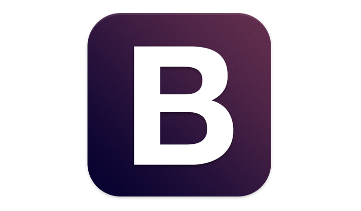

Frameworks |
Pros |
Coins |
|---|---|---|
|

BootstrapThe list would be woefully incomplete without the inclusion of the wildly popular front-end framework, Bootstrap. Created by Twitter developers and initially released in 2011, it’s the most used open-source framework in the world. |
|
|

FoundationCreated by web design company Zurb, Foundation is a highly advanced, enterprise-grade front-end framework that is ideal for developing nimble, responsive websites. Used on sites like Facebook, eBay, and Mozilla, it is also fairly complex and may not be suitable for newbies. |
|
|

Material UIMaterialize responsive front-end development framework also implements Google’s material design specifications and is loaded with ready-to-use buttons, icons, cards, forms and other components. It is offered in both a standard version and in one that runs on SASS. |
|
|